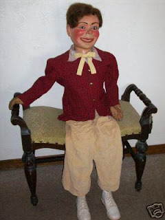

Maher/Insull
6/24/2009
{kind=link}

Question: Dear Clinton, I have an old Insull figure that was purchased in 1954 from the Mahers. He's an awfully nice figure with moving eyes, a winker, a raising arm and a human hair wig. He also has rubber hands which are beginning to deteriorate. Granted, his clothes are a little bizzare, but I can change them when I improve my skills enough to try peforming outside my house.
The woman I got the figure from said she was very surprised when the package arrived from England instead of Michigan. I know '54 was way before you joined Maher, but do you know anything about why the Mahers were selling Insull figures, and how much they sold for? Any history you could provide would be greatly appreciated.
Thanks for your blog. It's a highpoint of each day. Bill Bingham
The woman I got the figure from said she was very surprised when the package arrived from England instead of Michigan. I know '54 was way before you joined Maher, but do you know anything about why the Mahers were selling Insull figures, and how much they sold for? Any history you could provide would be greatly appreciated.
Thanks for your blog. It's a highpoint of each day. Bill Bingham
* * * * * *
Answer: Fred and Madeleine sold the Insull figures (imported from Davenport) for several years ('40s & 50s). Initially they ordered the complete figure (head and body) for their customers. It would seem you have one of them. Then to save shipping costs, they began importing the heads only and Mrs. Maher built bodies for the Insull heads. It was only when the Insull heads were no longer available that Mrs. Maher began making her own crude plaster molds from which she cast heads made of Plastic Wood. She did this on her own as Fred had died while the Insull figures were still being imported. Somewhere I do have an old price sheet from that era, but I seem to remember those figures were being sold for $175-$225, depending upon the size of the figure and the number of animations. I believe Mrs. Maher told me they paid around $60 for the heads. ($60 in 1950 would be inflated to nearly $1,000 today, so even back then such a premium figure required significant investment.) You are fortunate to own one! Clinton
* * * * * *
From Steve Engle: You are correct about the prices of the Maher's Insull figures. (As a kid I had most of their price list memorized!) This figure model (photo above), I believe, was called "Bob" in the brochure, tho' "Terry" seemed to be the more popular head. Several pro vents used "Terry," including Bill Boley back then. There is a British Figure maker (Geff???) still making the original Terry head.
I also had wanted a "Terry" ($175) which was to be my Christmas present in either 1955 or '56. It was ordered and Fred Maher replied "Terry" was out of stock but they had a replica of Fred's "Skinny Dugan" (also an Insull figure) with all the movements: mouth, upper lip, eyes, winker/blinkers, raising eyebrows and flapping ears for $195. As I loved the look of Skinny Dugan (a McElroy??) I thought this was great, but it was a major disappointment upon receiving him as he didn't look too much like the original. Also the non-rubber paint on the rubber hands was chipping off. However, I did use this figure for many years. (Had I known thenhow special the Insulls were/are, I'd have taken much better careof him!)